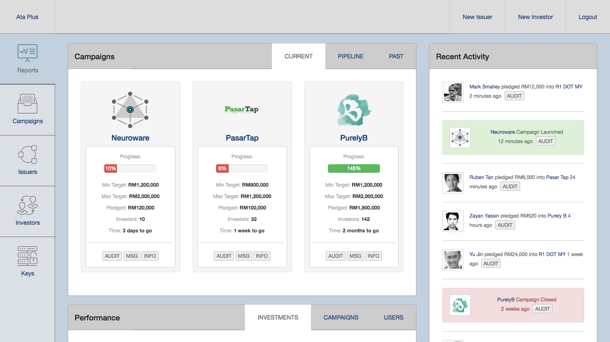

November 27th - 2017
We’ve spent a lot of time involved with financial technology - so much so that we’ve been repeatedly ranked as one of Malaysia’s top FinTech companies. In reality, we’re just a tech vendor that happens to have the majority of its clients within the financial service sector. One such client would be Ata Plus, who are one of six licensed ECF (Equity Crowdfunding) operators and the first regulated financial service provider in Malaysia to introduce blockchains at a production level - eighteen months ago.
By leveraging Cortex, Ata Plus are able to maintain a backup of important data within a tamper proof environment that can never be lost - whilst also allowing them to more easily and securely share specific information with those that they approve. It’s with keen foresight that they started doing this knowing that they were also granted rights to help facilitate unlisted secondary market activity. It is the introduction of these interconnected markets that would give the equity crowdfunding ecosystem a much needed liquidity boost by providing investors with a way to more freely trade their assets.
To build an efficient market, there needs to be a way for operators to share their data with multiple parties within the industry. This is an age old problem that the ECF operators will eventually need to solve. They could always do what banks do and each keep their own data silos but only share it with partners at midnight when the systems go offline for an hour. These were the fundamental problems that originally led Ata Plus towards integrating their processes with blockchain technology. They knew that in the future, the ecosystem would require a neutral data storage facility that could not be misappropriately influenced in any way.
After helping to launch Ata Plus, we’ve since been engaged with the Securities Commission of Malaysia (SC), which is the government institution that regulates equity crowdfunding. We’ve been working with SC since the formation of their aFINity programme, when they invited us to participate in their first innovation lab. We have been working with them on a pilot project using blockchains to facilitate unlisted market activity and are honored to finally be able to publicly discuss that work - and how they are utilizing our Cortex infrastructure in order to address the various requirements that they have.
From an implementation perspective, every project we work on involves three major milestones:
- PoC (Proof of Concept)
- MVP (Minimal Viable Product)
- Scalable Public Launch
In this particular case, the recently completed first phase had some interesting specifications:
- Must be 100% blockchain based (no central database or server required for anything)
- Must also work on any blockchain (meaning it needed to be designed as a protocol)
- Must also work without requiring the need for a central API or a single tech vendor
This is everything Cortex was originally designed to do and can be seen in action below:

PoCs (Proof of Concepts) are typically designed to work within a self-contained environment that is meant to simulate interactivity between the various stakeholders. Moving forward means moving beyond the browser and into the real-world - which is where several of our more recently added Cortex modules are being utilized. Key management services through to custom token creation and even permission-based networks are now involved. It’s once completing this next stage that the innovation lab will then publish the results from the pilot project as an industry blueprint to elaborate upon the technological architecture, principle software functions, and general development standards that are needed in order to build a distributed network for unlisted markets.
Other challenges extend beyond just technology. Today, Central Counterparties, Trustees and Custodians play an important role as independent third-parties verifying that transactions are carried out in accordance with the terms and conditions that safeguard the legitimate interests of all involved. However; in a distributed market structure, new methods of ensuring trust through consensus algorithms, smart contracts and multi-signatures are being developed. In light of this, will the role of CCPs, Trustees and Custodians be redefined?
Something needs to change - which is exactly why we helped form the Blockchain Embassy.
To be fair though - this should most probably be a story for another time.
In the meantime, please feel free to reach-out to us if you have any questions regarding the work we are doing here in Malaysia. The problems we are helping to solve for secondary markets are already being applied to a wide array of other industries that also rely upon encumbering intermediaries. It takes bold moves from the highest levels to make an impact with distributed technologies, which is what makes this news so exciting.
With government agencies such as SC now starting to make their announcements public, we can expect to hear a multitude of headlines in 2018 regarding even more meaningful projects that are being worked on by various groups. Whilst we wait, one can always just LEAP.